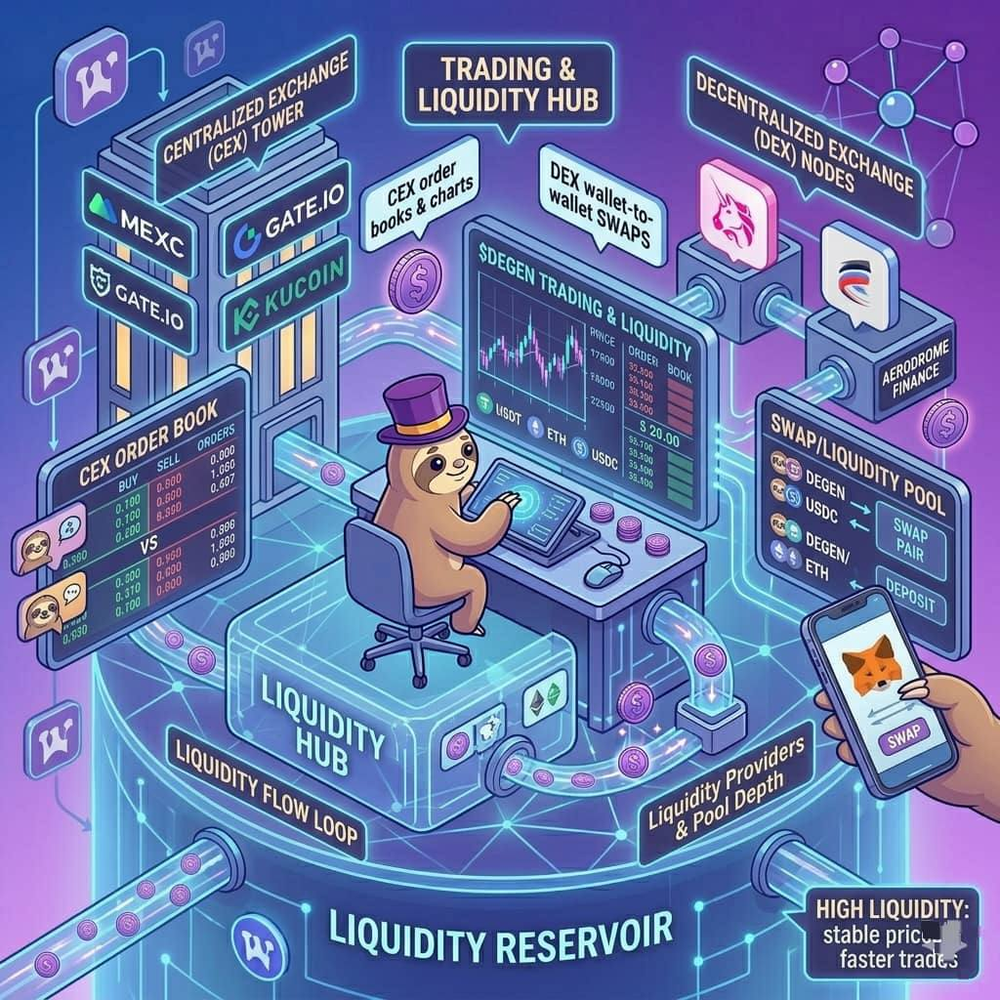

Trading & Liquidity
Where you can trade $DEGEN and how market participation works.
Trading and liquidity are important parts of the Degen (DEGEN) ecosystem.
They allow people to buy, sell, and exchange the token freely in the market.
This section explains where $DEGEN can be traded and how the market works in simple terms.
Trading simply means buying or selling a token.
People trade $DEGEN for different reasons:
- to invest in the ecosystem
- to speculate on price changes
- to use the token in apps and communities
- to convert it into other cryptocurrencies
When people trade, they usually exchange $DEGEN with another asset such as:
- USDT (Tether)
- USDC (USD Coin)
- ETH (Ethereum)
These are called trading pairs.
For example:
DEGEN / USDT
DEGEN / ETH
These pairs allow users to swap between tokens.
$DEGEN can be traded on two main types of platforms:
1️⃣Centralized Exchanges (CEX)
These are traditional crypto exchanges that operate like trading platforms.
Examples include:
- MEXC
- Gate.io
- KuCoin
These exchanges provide:
- order books
- trading charts
- liquidity pools
- easy buying and selling
Many traders prefer centralized exchanges because they are simple to use and provide high liquidity.
2️⃣Decentralized Exchanges (DEX)
Another way to trade $DEGEN is through decentralized exchanges.
DEX platforms allow wallet-to-wallet trading without intermediaries.
Examples include:
- Uniswap
- Aerodrome Finance
On DEX platforms:
- users connect their crypto wallet
- choose a trading pair
- swap tokens directly
This method gives users full control of their funds but requires understanding of gas fees and slippage.
Liquidity refers to how easy it is to buy or sell a token without affecting its price too much.
High liquidity means:
- many buyers and sellers
- faster trades
- stable prices
Low liquidity means:
- fewer traders
- slower trades
- larger price swings
Liquidity for $DEGEN comes from:
- trading activity on exchanges
- liquidity pools on decentralized exchanges
- market makers who provide trading volume
Some exchanges handle a large percentage of trading volume, which helps keep the market active.
Market participation means how people interact with the token in trading markets.
Different types of participants include:
⬆️Traders
People who buy and sell tokens to profit from price changes.
⬆️Investors
People who buy tokens and hold them long term.
⬆️Liquidity Providers
Users who deposit tokens into liquidity pools on DEX platforms to help facilitate trading.
⬆️Community Members
People who earn $DEGEN through rewards or tipping and later trade or hold the tokens.
All these participants together create the market activity that supports the token's value and liquidity.
A simple example of a trade:
- A user deposits USDT into an exchange.
- The user searches for the DEGEN/USDT trading pair.
- The user places a buy order.
- The exchange matches the order with a seller.
- The user receives $DEGEN tokens in their wallet.
The same process works in reverse when selling the token.
Liquidity is important because it helps:
- attract new traders and investors
- make the token easier to buy and sell
- support the growth of the ecosystem
- stabilize the market
Without liquidity, even strong community tokens can struggle to grow.
Because $DEGEN trades on multiple exchanges and decentralized platforms, the token has an active and accessible market.
